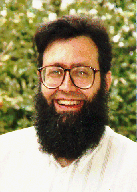

ACM Fellow Profile
www.cs.washington.edu/homes/notkin/ |
 |
Elaborate on the work leading up to your achieving the distinction of ACM Fellow:
My graduate work was in programming environments, with a focus on syntax-directed editors (as part of CMU's Gandalf project). Although it later became clear that environments of this ilk were not going to take over the world, it is still satisfying to see some ideas from that research thrust appear quite commonly in environments of today. Some of the weaknesses in the Gandalf approach motivated much of the software engineering research I was involved in after starting on the faculty at the University of Washington. I'll just list one example. In work with Marc Donner (then of IBM Research) and later with Bill Griswold, we wanted to bring the extensibility of "emacs"-like tools to more general applications; extensibility had been one shortcoming in the Gandalf project. This led to some work on a programmable interface to applications; in some sense, this was among early efforts that defined the now-common notion of APIs.
Was your work applied in Eclipse or Visual Studio?
There are no direct influences that I'm aware of. Syntax directed editing took a strict interpretation of editing and was hard to use in practice. But programmers can benefit from syntactic support in editors, and it is satisfying to see that editors today provide such support.
What is the best reference to your work (book or paper, full citation)?
In terms of my research, my web page has lots of references to the variety of projects I've worked on over time (http://www.cs.washington.edu/homes/notkin/).
What are your current research interests?
The major thing I am working on is matching of program elements across versions, partly in support of mining software repositories. I've been working with Miryung Kim on this for a little over a year.
What are your current outside interests?
My family and I like to travel. We're now living in southern Sweden for a year, while I'm on sabbatical. We spent a year in Japan and four months in Israel. I've also traveled to Australia, Thailand, Singapore, Malaysia, Korea, Hong Kong, and mainland China. We hope to go to Africa at the New Year break. We've been to many places in Europe.
I like to play poker and was involved in internet poker long before it was common. A friend from a longstanding game in Pittsburgh wrote an email server to manage the early WRGPT (World Rec. Gambling Poker Tournaments) events, although the first one or two were handled by passing email around directly. Needless to say, all that was won or lost in these events (which are still ongoing) was ego.
Although I've been out of it for nearly a decade, I practiced the Japanese martial art of Aikido for nearly 20 years, and hold a second-degree black belt.
Do you ever use your hobbies in SE or education?
Aikido is a purely defensive martial art. It isn't supposed to be attacking. Sometimes, there are too many conflicts in industry or academia over style or approach. We should not be attacking each other. Some people make their issues into dichotomies between industry and research. This is a false dichotomy. We need to work together. I guess I learned this from Aikido.
You are very diplomatic...
My colleagues would not always agree.
What was the greatest influence on you?
The professionals who influenced me the most were Nico Habermann, my PhD adviser, and Andy van Dam, my undergraduate adviser. They both stressed the fundamental importance of focusing on students: when done right, this leads to all the other good things like research results, personal satisfaction, etc. In terms of professional experience, I spent several years early after becoming a faculty member working in fields outside software engineering -- in particular, distributed operating systems and parallel programming. This apparent tangent let me build some insight into different ways to perform research, to evaluate research, and so forth. Just like traveling to other countries and cultures lets you see that there is more than just "the American way," working in these other areas provided perspective that has turned out to be valuable to me.
What was your greatest influence?
I am extremely proud of my students. I can't think of much research I've been involved in that hasn't been driven by my students. And they are out there succeeding in a broad variety of wonderful academic and industrial organizations. My students in academia are prolific advisers, having already provided me with at least 10 academic grandchildren!
I've been incredibly fortunate to get fantastic students. Having them grow up and go out and do stuff is incredibly satisfying. It is also terrifying that I have to go find another student. I hate it when they leave.
Who do you think has made the greatest impact on software engineering?
I always say that you never go wrong reading papers written by Dave Parnas, Fred Brooks, and Michael Jackson.
Which computer-related areas are most in need of investment by government, business or education?
Which isn't?
What advice do you have for computer science/software engineering students?
The standard question I that ask my students is "What is it about building software that sucks that shouldn't?" Answering this question usually requires software experience, but not always. When a problem is interesting and important to the student, they work on it better. In software engineering research, coming up with good questions is much harder than coming up with good solutions. The question of why things are hard that shouldn't be hard is related to Brooks' concept of accidental complexity. Minimizing accidental complexity has to be a high-level goal.
So, work on problems (a) that you understand in a visceral way (as well as a scholarly way) and (b) that you want to solve. Part (a) generally requires some significant experience in software engineering, while part (b) generally requires gentle but persistent "adviser management."
What advice do you have for practitioners?
Engaging with researchers can provide value. Not always, but it can. I guess that some researchers think the problem is the practitioners. "If only they were as smart as researchers." That is so bogus. Of course, there are good and bad practitioners. Like Theodore Sturgeon said, "90% of everything is crap." But, everyone benefits from a positive flow of information between industry and research.
What is the most-repeated mistake in software engineering?
I focus on research, rather than SE, so this is hard to answer. Many people say, "I know the right way." But, SE has complex problems and solving them will take many ideas from many people. Take my academic grandfather Dijkstra. Dijkstra dismissed testing, because it can show the presence of a bug, but not its absence. But for practitioners, testing is an important technique, which can be combined with the appropriate use of formal methods and other techniques. The risk is that each researcher absolutely knows the truth. But, thoughtfulness and kindness are always good.
The standard answer is premature optimization. But, I would say lack of understanding of the reason to produce a system. Michael Jackson said that the only reason to engineer a system is to have an effect in the world. If we don't understand why we need the system, we are unlikely to produce an effective system.
What are the most exciting/promising software engineering ideas or techniques on the horizon?
If I had to guess, the technique that will drive a significant number of important software engineering results in the next decade is data-mining -- and the associated gathering and analysis of software-oriented data.
How is SE likely to change over the next 10 years?
The huge challenge is that we are running a shell game. We need to educate more students. The growth curves from the Bureau of Labor Statistics show that we cannot satisfy the demand for SE and IT over the next 10 years. We are educating tens of thousands of students, perhaps a hundred thousand, at a stretch. But, we need millions. How are we going to build the software that we are interested in? What are we going to do? How will we cope? We don't talk about this very much.
From a universal point of view, we don't question our assumptions very often. Why? Fear or something else? Do we believe that what is going on today is what should be going on? There is incredible confidence about the future. I believe that everyone should be their own worst critic, rather than everyone else being their worst critic.
Are you confident about the future?
I'm very confident about the future. There is no question that software is here to stay, and we have lots of challenges ahead, but I am sure we're collectively up to them (even though software is a complex and scary beast). I'm rarely confident in specific results -- that is, whether the results will directly make a difference in the field. But with persistence, thoughtfulness, and dedication, the field will continue to produce research hat will make the engineering of software more effective.
What are your plans for the future or the next five years?
Find more great students and work with them.
Profiled by Michael Wing, Autumn 2006